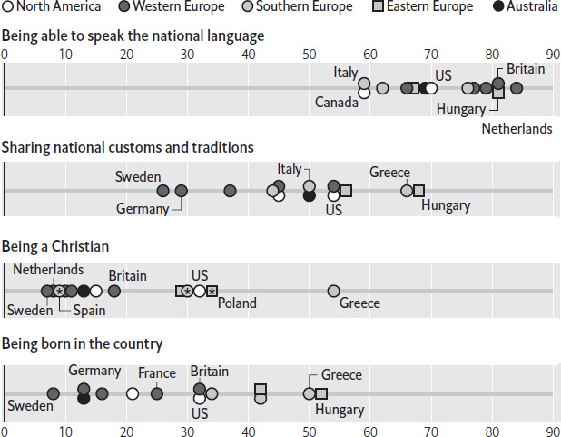
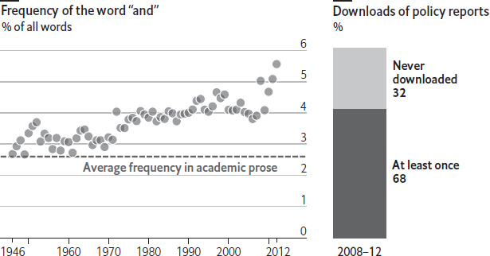

The way the world’s languages are displayed digitally can be a topic of raging, if somewhat arcane, debate. Coders and designers may disagree over whether a particular script has differentiated upper and lower cases, or which set of accents it needs. But the latest discussion, about emoji (the icons used in electronic communications to convey meaning or emotion – think smiling yellow faces), has been stickier than most.
It is all to do with Unicode. This is a standard that assigns numbers and a corresponding description to the characters of the world’s alphabets, as well as to many other things, such as mathematical symbols. It allows different devices, operating systems and applications to show the same characters across thousands of languages, so that a WhatsApp message written in, say, Sanskrit on an iPhone in California can be read by a recipient using a Windows laptop in Kathmandu. The standard is managed by a non-profit group, the Unicode Consortium, which began operations in the early 1990s. It regularly adds more characters to the list, whether for ancient languages that academics want to use, or for modern ones with relatively few speakers or unusual characters. The Script Encoding Initiative, which was established by the University of California, Berkeley, has a list of 100 scripts from South and South-East Asia, Africa and the Middle East that have yet to be incorporated into Unicode.
The Unicode standard started listing codes for emoji in 2010. After emerging in Japan in 1999, emoji spread worldwide in the 2000s, but no operating system or messaging app had a common numbering or representation scheme. So Windows, Android and iOS not only use different graphical renditions of those smiling yellow faces (and rice bowls, etc), but also at one time coded them with different numbers. An emoji sent from one system might appear as a completely different emoji, or even as a blank rectangular box, on arrival. Fortunately, the Unicode Consortium stepped in to standardise the numbers used, even though the specific appearance depends on the receiving platform or application (which now includes Slack, Facebook and Twitter, as well as operating systems on different devices). The difficulty for Unicode is that demand for more emoji is growing. This is driven by the likes of Apple and Google, as well as by businesses, industries, individuals and interest groups keen to see a particular symbol represented. The American state of Maine supported the proposal to add a lobster emoji. All proposals for new emoji put to the Unicode Consortium must be discussed and voted upon.
Some of the consortium’s members worry that making decisions about new emoji is distracting them from more scholarly matters and delaying the addition of new characters from scripts both ancient and modern. Proposals for frowning piles of poo (the smiling version already exists) drew particular ire, and were described as “damaging … to the Unicode standard”, by Michael Everson, a typographer. Such concerns are exaggerated, however, says Mark Davis, co-founder of the Unicode Consortium. Although emoji occupy a disproportionate percentage of media attention, the consortium has created a separate committee to handle them. Mr Davis also notes that the focus on emoji has had beneficial side-effects. Many software products previously lacked Unicode support. But designers keen to incorporate emoji installed upgrades that, as a side-effect, also allowed the display of Unicode characters in hundreds of languages that would otherwise have been ignored.
There seems to be little predictability to the English names for the letters of the alphabet, to say nothing of the names of letters in other languages. Some begin with an e-as-in-egg sound (eff, ell); some end in an ee sound (tee, dee); and others have no obvious rhyme or reason to them at all. How did they get that way?
The vowels are all named after their long forms. In Middle English, these were roughly ah, ay (as in “may”), ee, oh, oo (as in “tool”). But the “Great Vowel Shift” scrambled the long vowels of English over several centuries, starting in around 1400. This made English vowels sound different from those in Europe, and changed the letters’ names with them, to ay, ee, aye, oh. U was still called oo after the Great Vowel shift; only in around 1600 did it start being called yoo. The Oxford English Dictionary says of wy, also known as Y, merely that the name is of “obscure origin”. It is at least 500 years old.
The names of consonants are more regular than first appears. They use a modified form of the system handed down from Latin. “Stop” consonants – those that stop the airflow entirely – get an ee sound after them (think B, D, P and T). Consonants with a continuing airflow get an e-as-in-egg sound at the beginning instead (F, L, M, N, S, X). There are a couple of exceptions. C and G have both stop and non-stop (“hard” and “soft”) sounds, as seen in “cat” and “cent”, and “gut” and “gin”. They are called see and gee because in Latin they were only “stop” consonants and so follow the same naming rules as B and D. (Why they are not pronounced key and ghee is unclear.)
Other anomalies require a bit more explanation. R, which has a continuing airflow, used to conform to the rule above, and was called er. It changed to ar for unknown reasons. V was used as both a consonant and a vowel in Latin, and so does not fit the pattern above either: it is a fricative (a consonant in which noise is produced by disrupting the airflow), named like a stop. Double-U is a remnant of V’s old double-life, too. J did not exist in Latin; its English pronunciation is inherited from French, with some alternation. Zed comes from the Greek zeta. (Americans call it zee, perhaps to make it behave more like the other letter-names, though the exact reason is unclear.) And aitch is perhaps the greatest weirdo in the alphabet. Its name is descended from the Latin accha, ahha or aha, via the French ache. The modern name for the letter does not have an h-sound in it, in most places. But there is a variant – haitch – thought by some to be a “hypercorrection”, an attempt to insert the letter’s pronunciation into its name. In the Irish republic, haitch is considered standard; in Northern Ireland, it is used by Catholics, whereas aitch is a shibboleth that identifies Protestants. But it is not limited to Ireland: haitch is also spreading among the English young, to the horror of their elders.
India, with its 1.3bn people, vast territory and 22 official languages (along with hundreds of unofficial ones), is well known as one of the most linguistically diverse countries in the world. Yet it is no match for a country of just 7.6m inhabitants in the Pacific Ocean: Papua New Guinea. Nearly 850 languages are spoken in the country, making it the most linguistically diverse place on earth. Why does Papua New Guinea have so many languages, and how do locals cope?
The oldest group of languages in Papua New Guinea are the so-called “Papuan” languages, introduced by the first human settlers 40,000 years ago. Despite falling under the “Papuan” umbrella, these languages do not share a single root. Instead, they are split into dozens of unrelated families (and some isolates – single languages with no relatives at all). This contrasts with Papua New Guinea’s Austronesian languages, which arrived some 3,500 years ago, probably from a single Taiwanese source. Things were further complicated in the 1800s by the arrival of English-and German-speaking colonists. After independence, Papua New Guinea adopted three official languages. English is the first; Tok Pisin, a creole, is the second; Hiri Motu, a simplified version of Motu, an Austronesian language, is the third. (Sign language was added in 2015.) But the lack of state recognition did not quash variety. The country’s 850-odd languages each enjoy between a few dozen and 650,000 speakers.
Many of these languages have survived thanks to Papua New Guinea’s wild topography. Mountains, jungles and swamps keep villagers isolated, preserving their languages. A rural population helps too: only about 13% of Papuans live in towns. Indeed, some Papuans have never had any contact with the outside world. Fierce tribal divisions – Papua New Guinea is often shaken by communal violence – also encourage people to be proud of their own languages. The passing of time is another important factor that has promoted linguistic diversity. It takes about a thousand years for a single language to split in two, says William Foley, a linguist. With 40,000 years to evolve, Papuan languages have had plenty of time to change naturally.
In the face of this incredible variety of languages, Papuans have embraced Tok Pisin, a creole based on English, but with German, Portuguese and native Papuan languages mixed in. It started as a pidgin, developed by traders in the 19th century. (Its name is a pidginisation of “talk pidgin”.) But in recent decades it has become the main language in Papua New Guinea. There is a Tok Pisin newspaper, and it is popular in church. Tok Pisin is now spoken by 4m Papuans, a majority of the population. Its root as a pidgin helps explain its success: simple vocabulary makes it easy to learn. Its mixed heritage also makes it dazzlingly expressive. Pikinini means “child” and comes from Portuguese. The Tok Pisin for “urbanite” is susok man – “shoe sock man” in English. Yet Tok Pisin’s success may threaten Papua New Guinea’s linguistic diversity: it is also slowly crowding out other languages. A dozen have already vanished. As a modern Papuan language flourishes, ancient ones risk being lost for ever.
Around 17m people in Bosnia, Serbia, Croatia and Montenegro speak variations of what used to be called Serbo-Croatian or Croato-Serbian. Officially, though, the language that once united Yugoslavia has, like the country, ceased to exist. Instead, it now has four names: Bosnian, Serbian, Croatian and Montenegrin. But are these really all the same language?
The answer, according to a group of linguists and NGOs from the four countries, is a resounding “yes”. Working under the banner of a project called “Language and Nationalism”, the group issued a “declaration on the common language” in 2017. It stated that the four tongues together form a “polycentric” language, similar to English, German or Arabic. They argue that although different dialects exist, these are variations of the same language, because everyone who speaks it can understand one another. Indeed, this makes the four tongues more similar than the dialects of many other polycentric languages. The authors consider the insistence by educational and public institutions on the usage of only one of the four name variants to be “repressive, unnecessary and harmful”. The aim of the declaration is to stimulate discussion on language “without the nationalistic baggage and to contribute to the reconciliation process”, said Daliborka Uljarevic, the Montenegrin partner behind the declaration.
The insistence on calling Serbo-Croatian by four different names leads to endless absurdities. Children who live in the same town in Bosnia go to school in the same building but to classes in different languages. The Bosnian government portal is published in four languages: English, Bosnian and Croatian, which are written in the Latin alphabet, and Serbian, which is written in Cyrillic script. Yet the region’s politicians do not need translations when meeting. When war criminals are on trial before the UN tribunal in The Hague, they receive interpretation in the dialect spoken by the translator who happens to be on duty. A well-circulated meme from Bosnia highlights the absurdity: it features cigarette packets that repeat “smoking kills” twice in the Latin script and once in Cyrillic, all spelled identically.
As in so many parts of the world, the tussle over language is political. Nationalist Serbs see the 2017 declaration as an attempt to undermine the link between Serbs in Serbia, Bosnian Serbs and Montenegrins. Defusing the language issue would take away a tool the nationalists have used to stir trouble; it emphasises differences. Nationalist Serbs fear that if everyone thought they spoke the same language in Bosnia, that would undermine their political ambition of eventually destroying the country. Nationalist Croats trace the struggle for independence, in part, back to the struggle of academics in the 1960s who claimed that Croatian was a separate language. If it were, then Croats must be a separate people, and hence not Yugoslavs, they argued. Yet most ordinary people do not care much about the issue. When they ask if you speak their language, more often than not, they call it simply naški, “ours”.
The rise of populism in Europe and the United States in recent years has revealed how deeply divided voters are over immigration. Nationalists and populists, from Donald Trump to Britain’s UK Independence Party and Alternative for Germany (AfD), have proclaimed that governments should make keeping foreigners out a priority. But pinning down exactly what defines a foreigner, and what defines a national, is tricky. This is partly because identity is based on a nebulous mix of values, language, history, culture and citizenship.
A poll published in February 2017 by the Pew Research Centre, a think-tank, attempted to unravel the idea of how someone can be judged to be genuinely American, British or German. It asked respondents about various characteristics – language spoken, customs observed, religion and country of birth – and how important they were to being a national of their country.
National expression
How important is the following for being truly (nationality)?
Apr–May 2016, % responding very important

Sources: Pew Reasearch Centre
*Catholic
On average, over the 15 countries surveyed, speaking a state’s national tongue was seen as the most important trait. The Dutch rated this higher than anyone, whereas Canadians were least concerned about linguistic ability, with only half saying that being able to converse in English or French (one of the two national languages) was very important. One reason may be that Canada is divided by language; another is that, along with Australia, it had the largest share of people born abroad among the countries polled, at over 20% of the population.
Recent experiences with immigration appear to affect different countries in different ways. People in Greece and Hungary, which have been transit countries for large numbers of migrants from the Middle East, placed strikingly high importance on sharing customs and traditions, and being born in the country (Greeks also cared strongly about being Christian). Yet in Germany, the ultimate destination for many of the refugees and migrants, respondents gave comparatively little weight to such factors. That suggests that there may still be life in Germany’s Willkommenskultur (“welcoming culture”) – or at least that the AfD party still has some way to go before becoming a real contender for power.
Gadgets that can understand and respond to spoken commands are growing in popularity. Amazon’s Echo devices, featuring a digital assistant called Alexa, can be found in millions of homes. Ask Alexa to play music, set a timer, order a taxi, tell you about your commute or tell a corny joke, and she will comply. Voice-driven digital assistants from other big tech firms (Google Assistant, Microsoft’s Cortana and Apple’s Siri) have also vastly improved. How did computers learn to process human language?
The original approach to getting computers to understand human language was to use sets of precise rules – for example, in translation, a set of grammar rules for breaking down the meaning of the source language, and another set for reproducing the meaning in the target language. But after a burst of optimism in the 1950s, such systems could not be made to work on complex new sentences; the rules-based approach would not scale up. Funding for so-called natural-language processing went into hibernation for decades, until a renaissance in the late 1980s.
Then a new approach emerged, based on machine learning – a technique in which computers are trained using lots of examples, rather than being explicitly programmed. For speech recognition, computers are fed sound files on the one hand, and human-written transcriptions on the other. The system learns to predict which sounds should result in what transcriptions. In translation, the training data are source-language texts and human-made translations. The system learns to match the patterns between them. One thing that improves both speech recognition and translation is a “language model” – a bank of knowledge about what (for example) English sentences tend to look like. This narrows the system’s guesswork considerably. In recent years, machine-learning approaches have made rapid progress, for three reasons. First, computers are far more powerful. Second, they can learn from huge and growing stores of data, whether publicly available on the internet or privately gathered by firms. Third, so-called “deep learning” methods have combined faster computers and more abundant data with new training algorithms and more complex architectures that can learn from example even more efficiently.
All this means that computers are now impressively competent at handling spoken requests that require a narrowly defined reply. “What’s the temperature going to be in London tomorrow?” is simple (though you don’t need to be a computer to know it is going to rain in London tomorrow). Users can even ask in more natural ways, such as, “Should I carry an umbrella to London tomorrow?” (Digital assistants learn continually from the different ways people ask questions.) But ask a wide-open question (“Is there anything fun and inexpensive to do in London tomorrow?”) and you will usually just get a list of search-engine results. As machine learning improves, and as users let their gadgets learn more about them specifically, such answers will become more useful. Privacy advocates worry about the implications of being surrounded by devices that are constantly listening. But if the past few years of smartphone use are any indication, consumers are happy to set aside such concerns in return for the convenience of being able to operate a computer simply by speaking to it. Indeed, it is rather like casting a spell: say the right words, and something happens. That is the magic of machine learning.
An unusual war of words flared up in early 2017 at the World Bank. Paul Romer, its new chief economist, was stripped of control of the research division. An internal memo claimed that the change was to bring the operations department closer to the Bank’s research arm. But many suspected that it was because Mr Romer had clashed with staff over the Bank’s writing style. He had demanded shorter, better-written reports. In particular, Mr Romer questioned the excessive use of the word “and”. He proclaimed that he would not clear a final report for publication if “and” made up more than 2.6% of the text. His tenacious approach was said to have rubbed some employees up the wrong way. Was Mr Romer’s complaint justified?
The prevalence of “and” is hardly the only or indeed the best measure of good writing style. But used to excess, it can render prose turgid or, at worst, unreadable. One of the Bank’s reports from 1999 promised to “promote corporate governance and competition policies and reform and privatise state-owned enterprises and labour market/social protection reform.” The 2.6% limit set by Mr Romer roughly matches the prevalence of “and” in academic work. (By comparison, in a typical week’s print edition of The Economist, “and” accounts for just 1.5% of the text, excluding advertisements.)
Conjunction dysfunction
World Bank reports

Sources: “Bankspeak: The Language of World Bank Reports 1946–2012” by F. Moretti and D. Pestre, 2012; World Bank
A study by Franco Moretti and Dominique Pestre of the Stanford Literary Lab, a research outfit, analysed the language used by the World Bank since its founding in the 1940s. Back then, the average report roughly met the 2.6% standard. By 2012, however, the conjunction was taking up about 6% of the words in its reports. Other stylistic sins abounded. Acronyms had come to account for about 5% of reports, up from 3% in the 1970s. Financial terms, such as “fair value” and “portfolio”, had also become more popular. The World Bank’s report-writers face other difficulties, too. In 2014 the Bank’s number-crunchers highlighted the unpopularity of its studies: of the 1,611 documents they assessed, 32% were never downloaded by anyone. So Mr Romer was making a good point. If the World Bank wants its reports to be read, it could at least make them a bit more readable.
In France, questions of language often touch off fiery national debates. In 2016 reforms meant to simplify tricky spellings – including the optional deletion of the circumflex from some words – provoked outrage and an online protest called #JeSuisCirconflexe. In 2017, another bout of linguistic anguish provoked an intervention from the prime minister and alarm from the French Academy, the official guardian of the French tongue, over a “mortal peril” to the language. It stemmed from the publication of a third-grade grammar textbook featuring a rare punctuation mark. Why did this cause such distress?
All French nouns require a gender, which is often unconnected to the thing itself. There is nothing especially masculine, for instance, about le bureau (the desk) or feminine about la table (the table). In other cases, a noun’s gender is derived from the biological sex of its referent: un directeur is a male director; une directrice is a female one. Since the 17th century, the rule for plurals has been that the masculine always trumps the feminine. The reason, according to an early member of the French Academy, is that “the masculine is more noble”. Therefore, if only one directeur joins a group of 500 directrices, they collectively become les directeurs. The grammatical dominance of the masculine in French frequently creates conflict. A commission was created in 1984 to feminise job titles in order to recognise the growing numbers of women working in traditionally male-dominated professions. Its recommendations were so detested that the French government did not make the feminisation of professions mandatory until 1998.
The disputed textbook offered a solution to what some feminists believe is an example of the sexism encoded in the French language. In order to refer to both genders, it inserts a floating dot, known as an interpunct, after the masculine version of certain plural nouns, and follows it with the feminine ending. So the group of one male and 500 female directors, for instance, becomes les directeur·rice·s. Few paid attention in 2015 when the High Council for Gender Equality, a consultative state body tasked with promoting equal rights, proposed the fix in a list of recommendations on implementing gender-inclusive language. The backlash to the textbook’s publication was rather swifter. The (predominantly male) French Academy, created by Cardinal Richelieu in 1635, warned that this “aberration” would create “a confusion close to illegibility” and allow other languages to “take advantage to prevail”. Édouard Philippe, the prime minister, weighed in, asking ministers “not to make use of the so-called inclusive writing in official texts”.
The controversy over gender-inclusive language came just as France grappled with its own #MeToo protests against sexual abuse and harassment, called #BalanceTonPorc (“Expose your pig”). More than 300 French teachers signed a manifesto saying that they would no longer teach the rule that the masculine dominates the feminine. Technology, too, is playing a role in helping to regularise gender-inclusive language, despite the warning cries from the French Academy. The French Association of Normalisation, a national standard-setting body, said that it is designing a new French keyboard that will include an interpunct. There are good reasons to do so. Several studies suggest that gender-inclusive language can help reduce gender stereotyping and discrimination; others suggest a link between gendered languages and lower rates of female workforce participation. Whether or not the interpunct catches on, that is a very good point.